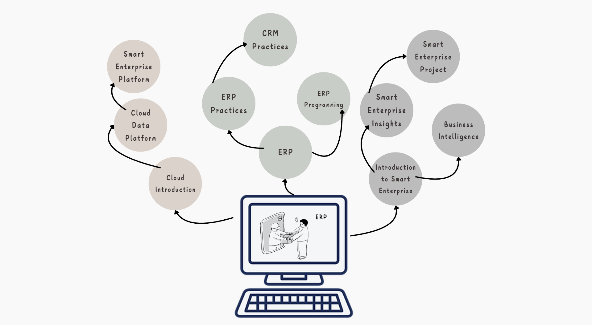
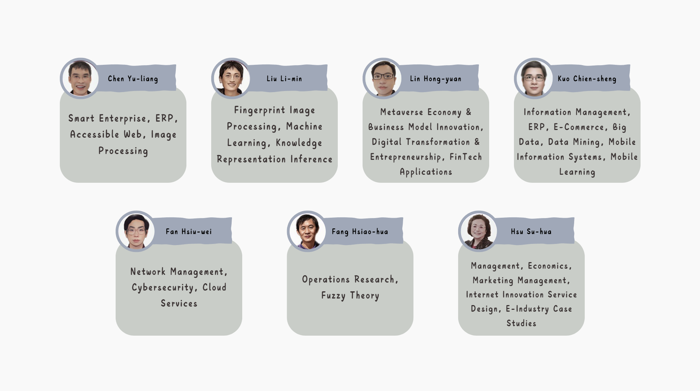

Course Introduction
Based on a survey conducted by the ERP Laboratory at Shih Hsin University, more than 99.9% of medium and large enterprises in Taiwan have already implemented Enterprise Resource Planning (ERP) systems. This shows that ERP is an essential system in businesses. ERP uses information technology to help enterprises solve issues related to production, sales, human resources, development, finance, and other daily operations.
Shih Hsin University’s Department of Information Management places great importance on ERP education. From undergraduate to graduate levels, a series of courses are designed to help students gradually learn ERP, covering concepts, operations, theory, implementation, customization, and internships. The goal is to enable students to immediately connect with the industry upon graduation and cultivate the talents needed by businesses.
The ERP courses at Shih Hsin University use Microsoft’s Dynamics 365 Business Central. Graduates, in addition to working at Microsoft’s consulting firms, also find employment at other ERP companies such as SAP, Oracle, and Dingxin. Many graduates even pursue careers in different industries, engaging in ERP-related roles. Career paths include ERP consultants, ERP engineers, ERP programmers, accountants, production managers, and more.
Course Structure

Navigator
